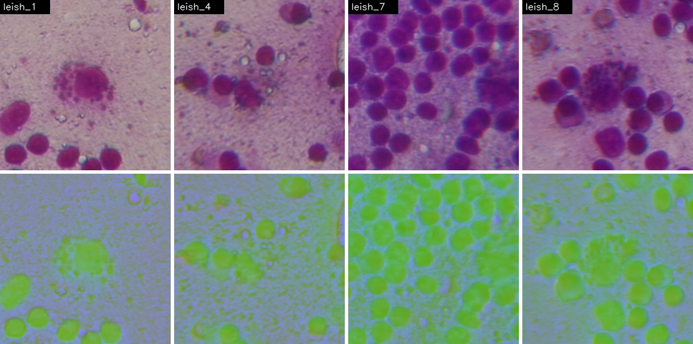

exp07 — YOLO11l + Lab puro + batch 4
| Modelo | YOLO11l |
| Entrada | Lab puro (L com CLAHE) |
| Hiperparâmetros | idem exp06, batch 4, nbs 4 (accumulate = 1), jitter de cor desligado |
| Validação | 6 folds por lâmina (5 de treino, 1 de validação e 2 de teste), a mesma divisão de todos os experimentos |
Resultado
Conjunto de teste, média ± desvio padrão nos 6 folds.
| Precisão | Recall | mAP50 | mAP50-95 |
|---|---|---|---|
| 0,449 ± 0,121 | 0,490 ± 0,071 | 0,407 ± 0,118 | 0,148 ± 0,041 |
Detalhes
Objetivo
Testar mais atualizações de peso por época e o espaço Lab direto como entrada. No notebook, é o "experimento 6".
O que foi feito
- Batch 4 com nbs 4. Por padrão, o Ultralytics acumula gradientes até um "batch nominal" de 64 (
nbs): com batch 16, os pesos só são atualizados a cada 4 mini-batches. Só reduzir o batch não muda nada, porque a acumulação compensa. Comnbs=4, a acumulação vira 1 e os pesos são atualizados a cada mini-batch, 4× mais vezes por época. - Lab puro como entrada: o recorte é convertido para Lab, o L recebe o mesmo CLAHE do exp06, e a imagem salva é [L, a, b], sem voltar para RGB. A rede só vê três canais numéricos, então aceita essa entrada. O jitter HSV foi desligado, porque pressupõe RGB, e os aumentos geométricos foram mantidos. Ao exibir, as cores aparecem falsas (núcleos esverdeados). Dataset gerado:
exp07_recortes_512_lab. - YOLO11l.
Exemplo da entrada

exp07_recortes_512_lab), exibida como se fosse RGB. As cores falsas são esperadas: o canal L com CLAHE aparece como "vermelho", o a como "verde" e o b como "azul".Por lâmina (mAP50)
Melhor: leish_7 (0,587). Pior: leish_4 (0,151). leish_3: 0,366, o melhor valor dessa lâmina em toda a série. leish_8: 0,283, o pior dela.
Épocas por fold (total / melhor)
fold 1: 66/26 · fold 2: 93/84 · fold 3: 84/44 · fold 4: 150/128 · fold 5: 123/83 · fold 6: 71/31
Observações
- A média piorou, mas a leish_3 (10 instâncias) teve o melhor resultado da série. O ganho numa lâmina foi compensado por perdas em outras (leish_4 e leish_8).
- O fold 4 chegou ao limite de 150 épocas (melhor época: 128).
- Três fatores mudaram juntos.
Período: jul.–ago. 2026 · Notebook: 03_experimentos anteriores/exp07_yolo11l_lab/deteccao_yolov11l_lab.ipynb
mAP50 por lâmina
Média entre os folds em que a lâmina caiu no teste.
| Lâmina | mAP50 |
|---|---|
| leish_1 | 0,403 |
| leish_2 | 0,317 |
| leish_3 | 0,366 |
| leish_4 | 0,151 |
| leish_5 | 0,520 |
| leish_7 | 0,587 |
| leish_8 | 0,283 |
| leish_9 | 0,430 |